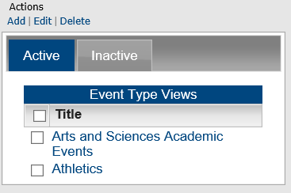
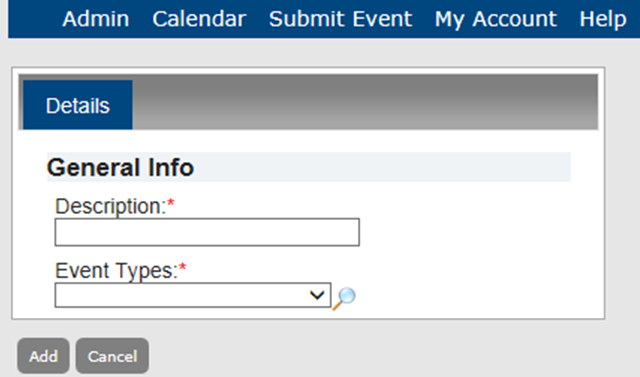
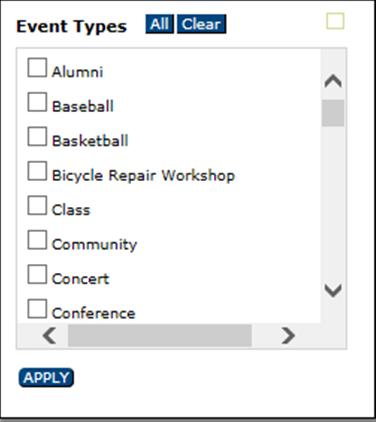
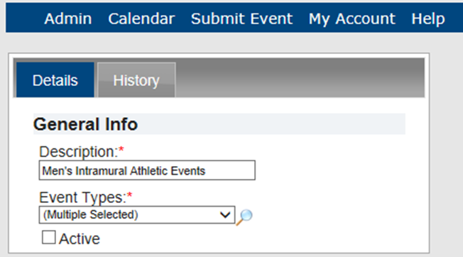

An Event Type View is a grouping or collection of event types to help your guests or users to search for multiple event types in a single step, rather than conducting multiple searches for different event types. For example, if you are managing calendars for a university campus, you might group the event types of Freshmen Swimming, Freshmen Track and Field, Freshmen Soccer, and Freshmen Basketball under the Event Type View of "Freshmen Athletic Events." This topic guides you in creating, editing, deleting and activating and inactivating Event Type Views and viewing Event Type View history.
You can only add active event types to an Event Type View. You might first need to activate an event type so that you can add it to a view.
From the Admin Panel, navigate to Admin > Configuration > Event Type Views. The Event Type Views page opens on the Active tab, listing all active Event Type Views in Master Calendar.

Under Actions, click Add. The Adding Event Types page opens on the Details tab.

Select Multiple. The Event Types dialog box will appear. Select all event types in a single step by clicking All or select more than one event type, and then click Apply. This associates multiple event types with the Event Type View you are creating.

From the Admin Panel, navigate to Admin > Configuration > Event Type Views. The Event Type Views page opens on the Active tab, listing all active Event Type Views in Master Calendar.
Under Actions, click Edit. The Details tab opens, showing the description for the Event Type View and the event type that was selected for the view.
